Five-model benchmark · Pooled 1° · 7 / 30 days · Whole-ID nested development validation
Primary target: equal cells, equal IDs within cell. Fixed 90% regions. Final test remains locked.
Full scientific report · Primary data · Differences and intervals · Support and fallback
| horizon_days | model | brier | region90_cells | region90_hit | zero_true_probability | predicted_exit_probability | evaluable_ids | evaluable_pairs |
|---|---|---|---|---|---|---|---|---|
| 7 | Adaptive | 0.966486 | 37.552006 | 0.885722 | 0.001522 | 0.000000 | 385 | 303288 |
| 7 | B2 | 0.981297 | 17.558281 | 0.748378 | 0.063489 | 0.000000 | 385 | 303288 |
| 7 | Fixed | 0.962457 | 42.711648 | 0.899558 | 0.001522 | 0.000000 | 385 | 303288 |
| 7 | LocalDisplacement | 0.975131 | 23.129564 | 0.822021 | 0.006532 | 0.000044 | 385 | 303288 |
| 7 | LocalEndpoint | 0.958288 | 27.358146 | 0.881910 | 0.002927 | 0.000000 | 385 | 303288 |
| 30 | Adaptive | 0.995303 | 130.933224 | 0.777365 | 0.014935 | 0.000000 | 337 | 268998 |
| 30 | B2 | 1.017814 | 56.570651 | 0.502761 | 0.314331 | 0.000000 | 337 | 268998 |
| 30 | Fixed | 0.994931 | 133.857527 | 0.775861 | 0.014935 | 0.000000 | 337 | 268998 |
| 30 | LocalDisplacement | 1.007012 | 96.172559 | 0.699607 | 0.083228 | 0.000517 | 337 | 268998 |
| 30 | LocalEndpoint | 0.993751 | 104.679444 | 0.762831 | 0.056044 | 0.000000 | 337 | 268998 |
| horizon_days | model | reference | point_Brier_gain | conditional_Brier_support | conditional_quality_preserving | conditional_smaller_region | joint_point_benefit | application_tradeoff | delta_brier | delta_region90_cells | delta_region90_hit |
|---|---|---|---|---|---|---|---|---|---|---|---|
| 7 | LocalDisplacement | Fixed | False | False | False | False | False | True | 0.012674 | -19.582084 | -0.077537 |
| 30 | LocalDisplacement | Fixed | False | False | False | False | False | True | 0.012081 | -37.684968 | -0.076253 |
Smaller regions alone do not establish better prediction. Red interval marks use the prespecified conditional quality screen; they are not independent final-test guarantees.
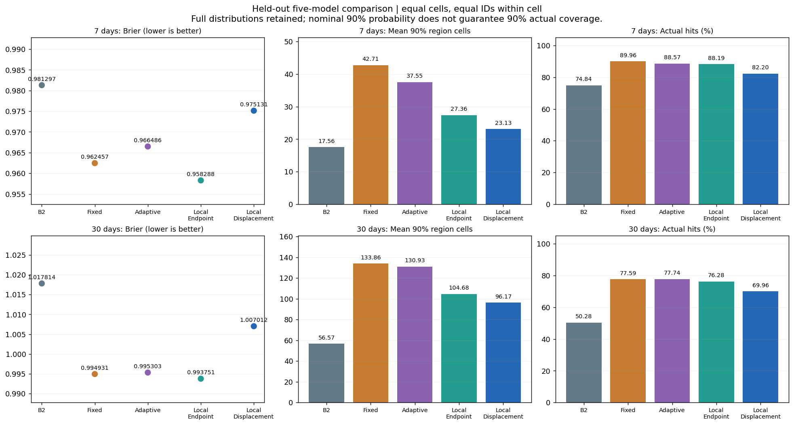
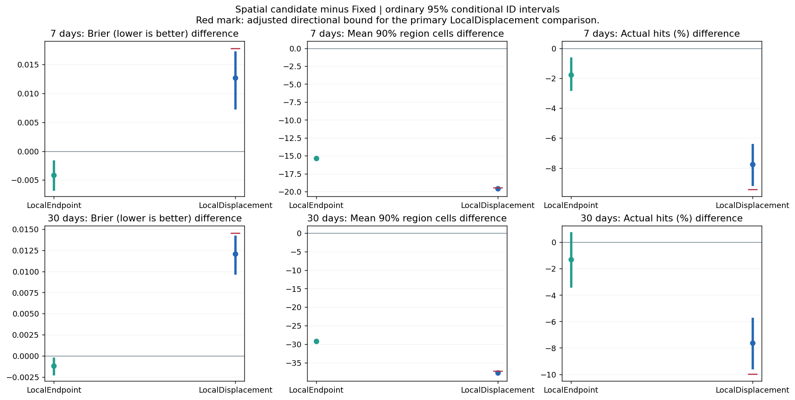
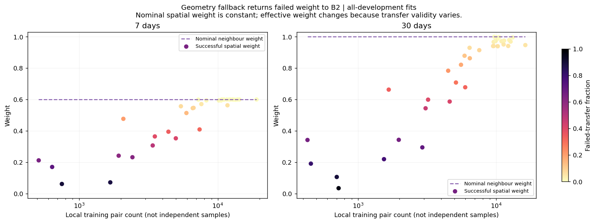
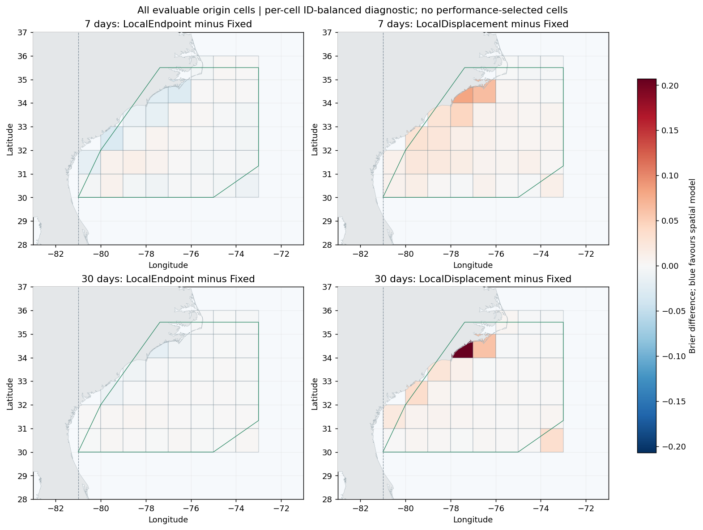
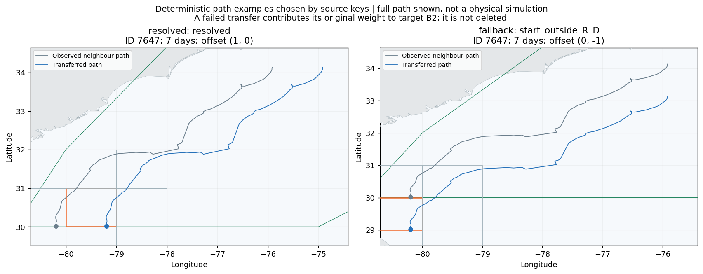
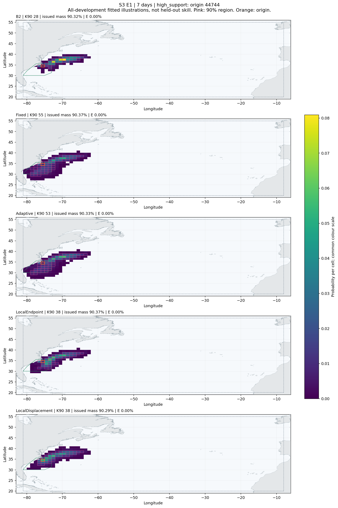
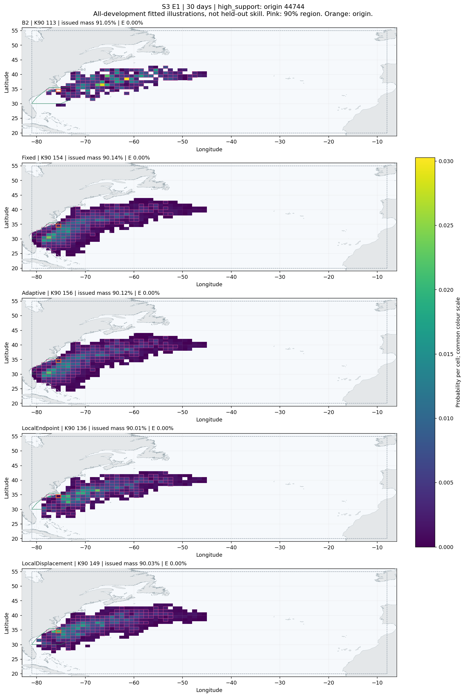
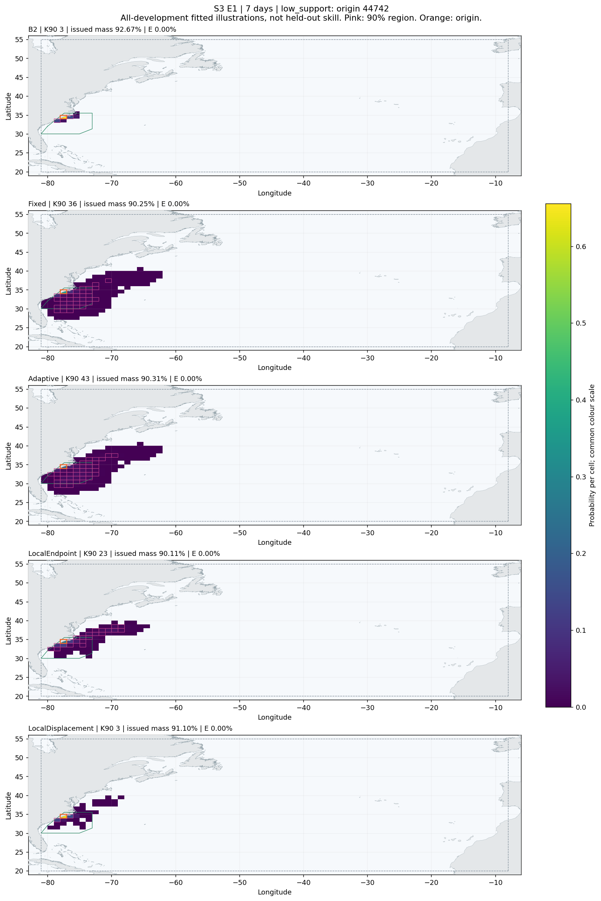
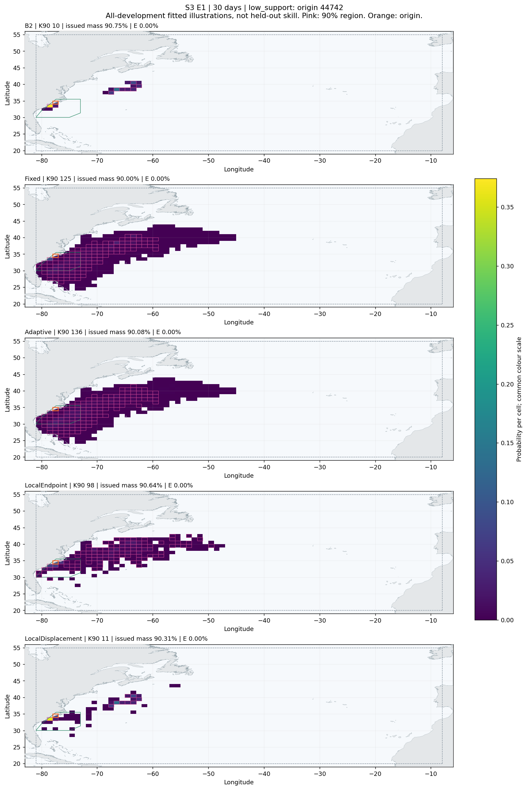
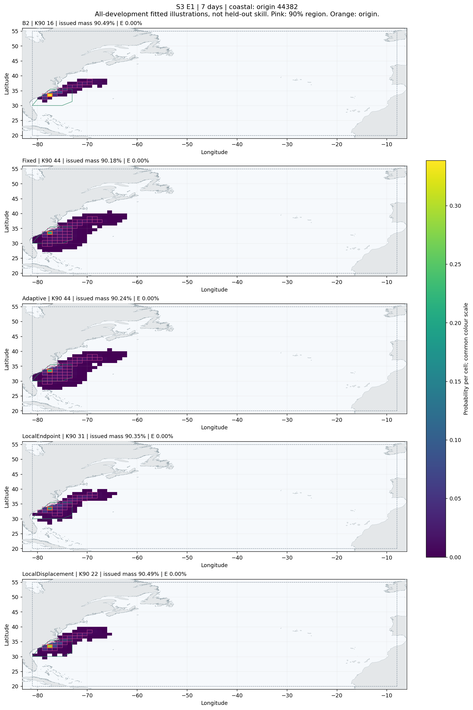
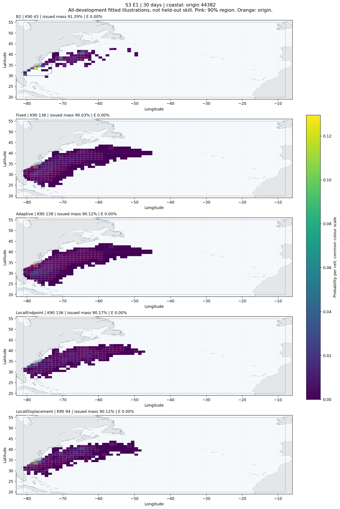
Candidate maps show full-development fits and training-support-selected examples; held-out statistics provide the skill evidence. Full probability tails remain stored.